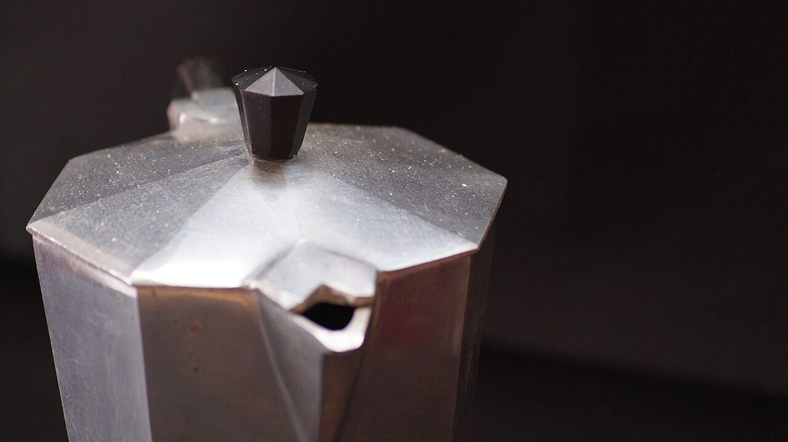

棚卸し表 No.3メニュー
メニュー
メニューと価格は準備中です。確認でき次第、この表に記入します。
棚 C / 品目台帳
まだ空欄の台帳
| No. | 品名 | 価格 |
|---|---|---|
| 01 | 準備中 | 準備中 |
| 02 | 準備中 | 準備中 |
| 03 | 準備中 | 準備中 |
| 04 | 準備中 | 準備中 |
| 05 | 準備中 | 準備中 |
| ご予約 | 準備中 | 準備中 |
|---|
空欄の行は、お店が何かを提供していることを示すものではありません。
棚 C / 写真の棚
豆と道具のイメージ
下の写真は雰囲気づくりのためのフリー素材で、お店で提供しているものではありません。提供メニューを示すものでもありません。
